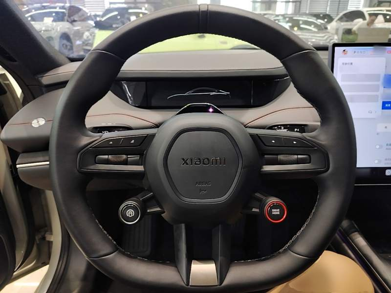
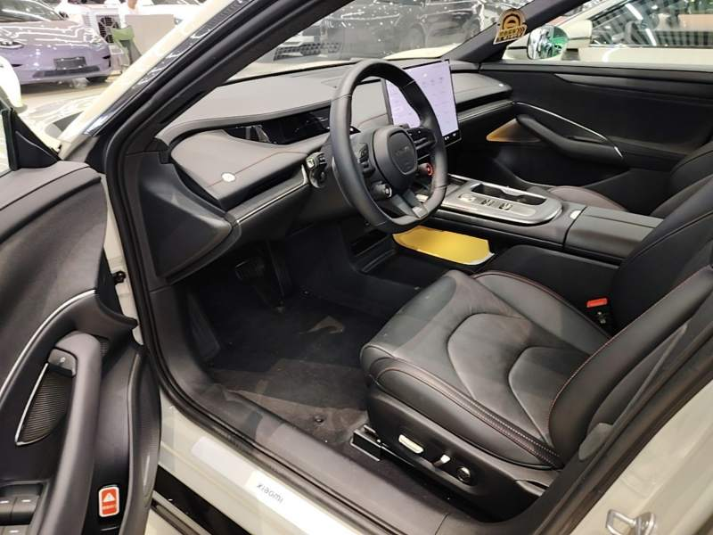
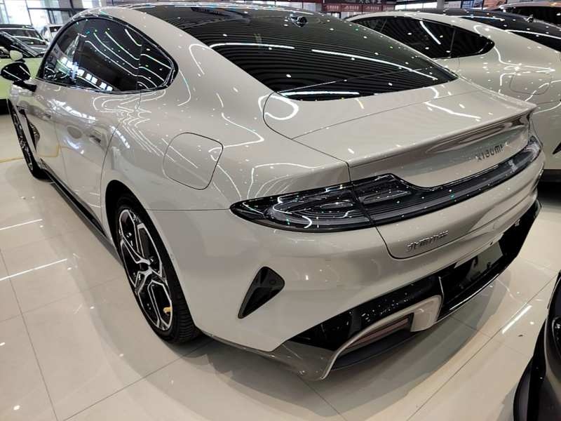
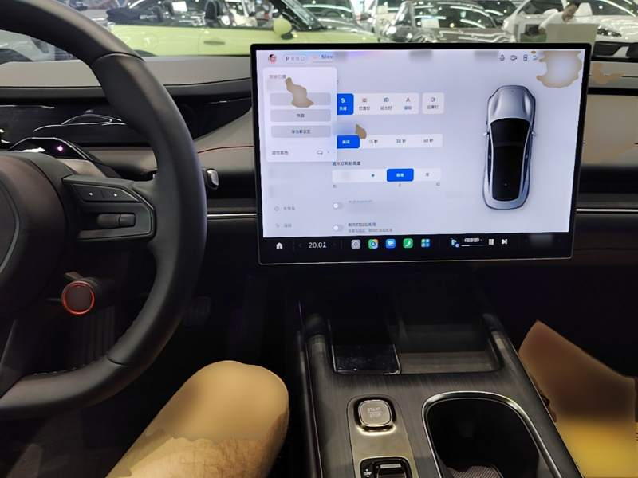

Ocena Guazi: A ([X co oznacza A na skali S/A/B]) · stan baterii: 91% · przebieg: 29 500 km · rocznik 2024
Cena do odbioru: [X cena do odbioru w PLN] · Gwarancja na baterię: [X gwarancja na baterię: czy jest, nazwa, okres]
Xiaomi zrobiło samochód. My go sprowadzamy.
Elektryk z napędem na tylne koła. Zamiast opinii o chińskich autach masz kartę tego jednego egzemplarza: ocenę inspekcji Guazi, stan baterii, przebieg.
Zapytaj o ofertęZnasz to
Wszędzie słychać o chińskich autach
Ciągle widzisz chińskie auta w testach i na ulicach. Chcesz sprawdzić, czy to coś warte.
Pierwszy elektryk w życiu
Pierwszy raz liczysz, czy elektryk ci się opłaca, na przykład po założeniu fotowoltaiki. Sprawdzasz, czy któryś chiński elektryk mieści się w twoim budżecie.
Zamiast opinii o chińskich autach: karta tego jednego auta
Chińskie auto ocenia się po stanie egzemplarza
Tak jak każde używane auto: po stanie konkretnego egzemplarza, a nie po kraju produkcji. Karta tego egzemplarza podaje ocenę Guazi A ([X co oznacza A na skali S/A/B]), przebieg i stan baterii. Guazi to partner China Select, od którego pochodzi karta egzemplarza.
Stan baterii podany w karcie: 91%
Data wpisu w karcie Guazi: 12.08.2026. Sposób pomiaru: [X sposób pomiaru, do potwierdzenia z Guazi]. Co będzie po latach, rozstrzyga gwarancja na baterię, jeśli jest: [X gwarancja na baterię: czy jest, nazwa, okres].
Cztery fakty do powtórzenia znajomym
Rocznik 2024. Ocena Guazi A ([X co oznacza A na skali S/A/B]). Stan baterii 91%. Przebieg 29 500 km. Wszystkie cztery podane są w karcie egzemplarza. Raport inspekcji: [X przykładowy raport od Guazi].

Co dostajesz w tym aucie
Elektryk z napędem na tylne koła. Wersja z karty Guazi: „Rear-Drive Long-Range Intelligent Driving Version”. Parametry tego egzemplarza:
Elektryczny, na tylne koła
2024
29 500 km
5
91%
571 km oraz 628 km znamionowo. [X norma pomiaru zasięgu znamionowego 628 km: CLTC czy WLTP, prawdopodobnie CLTC, do potwierdzenia]
[X wartość z karty modelu]
[X liczba właścicieli według Guazi]
Źródło: karta egzemplarza Guazi.
To auto, nie zdjęcie poglądowe
Zdjęcia z karty Guazi, tego samego egzemplarza, którego dotyczą ocena i stan baterii.





Karta egzemplarza Guazi tego auta
Karta egzemplarza podaje ocenę inspekcji Guazi: A ([X co oznacza A na skali S/A/B]). Poniżej to, co wynika z karty i ze zdjęcia komputera pokładowego.
A. Skala ocen Guazi: [X co oznacza A na skali S/A/B]
91%. Data wpisu w karcie Guazi: 12.08.2026. Sposób pomiaru: [X sposób pomiaru]
29 500 km w karcie egzemplarza. Komputer pokładowy na zdjęciu pokazuje łącznie 29 504 km.
[X liczba właścicieli według Guazi]
[X szkody wykazane przez Guazi: wypadek, zalanie, pożar]
[X przykładowy raport od Guazi, jeśli go przekaże]
Zdjęcie: ekran komputera pokładowego tego egzemplarza, menu po chińsku. Łączny przebieg na ekranie: 29 504 km.
Z czym kupujący przychodzą do chińskiego elektryka
To pytania z Google (Podobne pytania), nie opinie klientów. Przy każdym pytaniu jest odesłanie do odpowiedzi na tej stronie.
Czy warto kupować chińskie auto?
Odpowiedź dla tego egzemplarza to karta inspekcji, sekcja „Stan egzemplarza”.
Czy auto elektryczne może się zapalić?
Sekcja „Najczęstsze obawy”, bateria: [X odpowiedź ze źródłem].
Co z elektrykiem po 10 latach?
Sekcja „Najczęstsze obawy”, bateria: stan dziś i gwarancja na baterię, jeśli jest.
Jakie są opinie o chińskich samochodach?
Opinie właścicieli z Polski z nazwą modelu i przebiegiem: [X po pierwszych sprzedażach]. Liczba aut sprowadzonych przez China Select: [X liczba, dopiero z danych].

Cena do odbioru w Polsce: [X cena do odbioru w PLN]
W cenie jest: [X skład ceny: transport, cło, akcyza, VAT, rejestracja, do potwierdzenia].
[X cena, model, źródło i data]
[X kwota w zł, tylko przy potwierdzonym odniesieniu]
Zużycie energii tego egzemplarza: [X kWh na 100 km]. Przy cenie prądu [X zł za kWh] koszt 100 km to [X zł].
[X rata od partnera finansowego]
Termin: [X termin odbioru w tygodniach]. Dostępność egzemplarza na dzień [X data potwierdzenia].
Zapytanie o ofertę nie jest rezerwacją. Zasady zaliczki: [X ile, kiedy, kiedy wraca].
Xiaomi Auto SU7 2024
Dostępność na dzień [X data potwierdzenia]. Termin odbioru: [X termin odbioru w tygodniach].
Najczęstsze obawy
Co będzie z baterią po latach
Dziś: 91% stanu baterii tego egzemplarza (data wpisu w karcie: 12.08.2026). Gwarancja na baterię: [X gwarancja na baterię: czy jest, nazwa, okres]. Pożar i zachowanie baterii po 10 latach: [X odpowiedź ze źródłem].
Kupuję auto, którego nie widziałem
Ocena inspekcji Guazi i dziewięć zdjęć tego egzemplarza są na stronie przed zapytaniem. Raport inspekcji: [X do pobrania, jeśli Guazi go przekaże]. Zasady zaliczki: [X ile, kiedy, kiedy wraca].
Gdzie to serwisować
[X kto serwisuje ten model w Polsce · ile trwa sprowadzenie typowych części · ile kosztuje przegląd]
Homologacja i rejestracja
[X kto załatwia formalności, jakie dokumenty dostaje kupujący, ile to trwa i kosztuje]
Co powiedzą znajomi
Cztery fakty do powtórzenia znajomym są w sekcji „Dlaczego to auto”. Opinie właścicieli z Polski z nazwą modelu i przebiegiem: [X po pierwszych sprzedażach].

Czy będzie po polsku
Ekran na zdjęciu ma menu po chińsku, tak wygląda ten egzemplarz dziś. Język polski, CarPlay lub Android Auto: [X czy jest, kto i kiedy to ustawia, ile kosztuje].
Kiedy to nie jest dobry wybór
Kto potrzebuje auta w kilka dni
Termin odbioru tego egzemplarza: [X termin odbioru w tygodniach].
Kto oczekuje autoryzowanego serwisu marki blisko domu
Serwis tego modelu w Polsce: [X kto serwisuje, gdzie]. Gwarancja fabryczna marki w Polsce: [X obowiązuje / nie obowiązuje].
Kto kupuje wyłącznie po opiniach właścicieli z Polski
Opinii klientów China Select na stronie nie ma. Do sprawdzenia zostają ocena inspekcji Guazi, stan baterii, przebieg i zdjęcia egzemplarza.
Czy chińskie auta mają homologację i certyfikaty dopuszczające do ruchu w Polsce?›
[X odpowiedź: homologacja i rejestracja tego egzemplarza w Polsce, kto załatwia formalności, ile trwa, jakie dokumenty dostaje kupujący]
Jakie normy emisji i klasy bezpieczeństwa spełniają chińskie auta sprzedawane w Europie?›
[X odpowiedź: wynik testu zderzeniowego tego modelu (program, rok, wersja); wymagania dla auta elektrycznego]
Jakie są opinie o chińskich samochodach?›
Dla tego auta zostają dane z karty: ocena inspekcji Guazi A ([X co oznacza A na skali S/A/B]), stan baterii 91%, przebieg 29 500 km i dziewięć zdjęć. Opinie użytkowników tego modelu po kilku latach eksploatacji: [X źródło i data].
Czy import chińskiego elektryka do Polski w ogóle się opłaca, czy lepiej kupić na miejscu?›
[X odpowiedź: cena do odbioru obok ceny porównywalnego auta w Polsce, z datą]
Co się dzieje z gwarancją i serwisem, jeśli chiński elektryk zawiedzie?›
[X gwarancja China Select: czy jest, gwarant, okres · gwarancja na baterię: czy jest, nazwa, okres · kto serwisuje i ile trwa sprowadzenie części]
Czy auto elektryczne może się zapalić?›
[X odpowiedź ze źródłem]
Co z elektrykiem po 10 latach?›
Dziś bateria tego egzemplarza ma 91% (data wpisu w karcie: 12.08.2026). Gwarancja na baterię: [X gwarancja na baterię: czy jest, nazwa, okres]. Prognoza na 10 lat: [X źródło].
Czy menu będzie po polsku?›
[X odpowiedź: język menu, CarPlay lub Android Auto, kto i kiedy to ustawia, ile kosztuje]
Ile i kiedy wpłacam, zanim auto przyjedzie?›
[X zasady zaliczki: ile, kiedy, kiedy wraca]